计算机图形学
第四章(1) 观察
如何“画”出三维物体？

不同的“画法”服务于不同的目的：艺术的真实感 vs 工程的精确性
学习目标 (Objective)
- 构成要素: 了解经典观察系统的三个基本组成部分
- 投影分类: 掌握投影的主要分类方式，并理解其划分依据
- 平行投影: 辨析正交投影、斜投影和轴测投影的概念与应用
- 透视投影: 理解透视投影的基本原理和视觉特点
两个游戏画面
这是两个游戏画面，请比较这两幅画面中的“立体感”有何不同？
左图近大远小，符合视觉真实感；右图远近大小一样，具有设计感
这背后是两种不同的投影成像方法
经典观察的构成要素
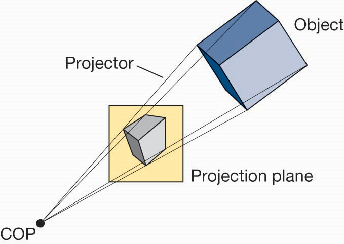
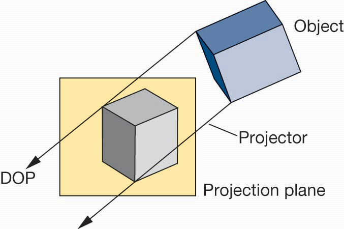
- 投影中心(Center of Projection, COP)：观察点或光源，即“眼睛”所在位置
- 投影线(Projector)：从物体射向投影中心的光线，将物体投射到投影平面上
- 投影平面(Projection Plane)成像平面，即“屏幕”或“画布”
平面几何投影
- 标准投影将物体投射到成像平面
- 所有的投影线均是直线，要么平行，要么会聚到投影中心
- 所有的投影线都是直线，能够保持线性关系，但不维持角度大小
- 非线性投影适用于特定的范围，比如地图
经典投影示例
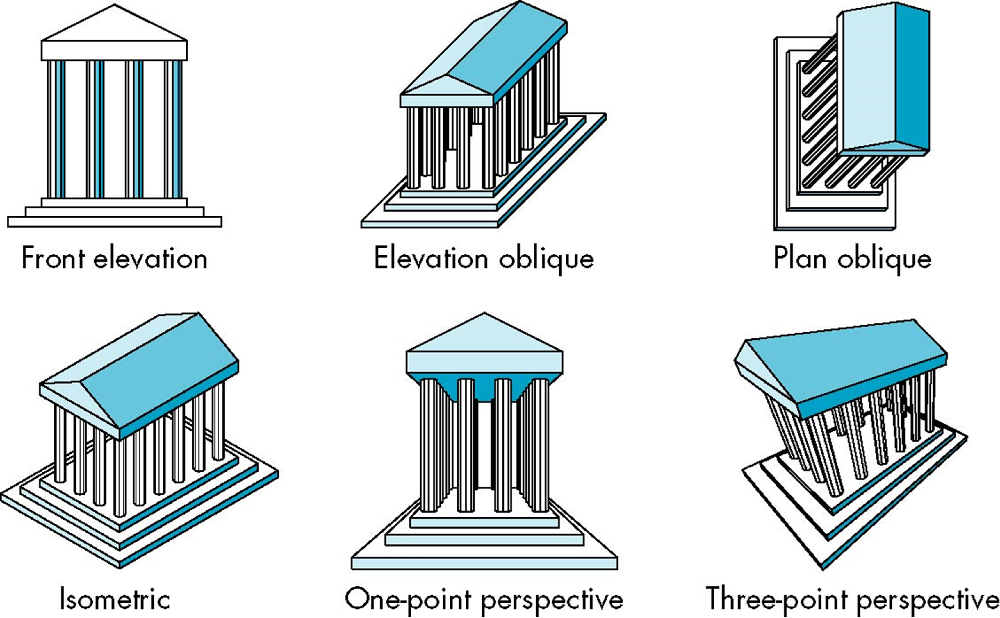
平面几何投影分类
投影中心与投影平面的相对关系
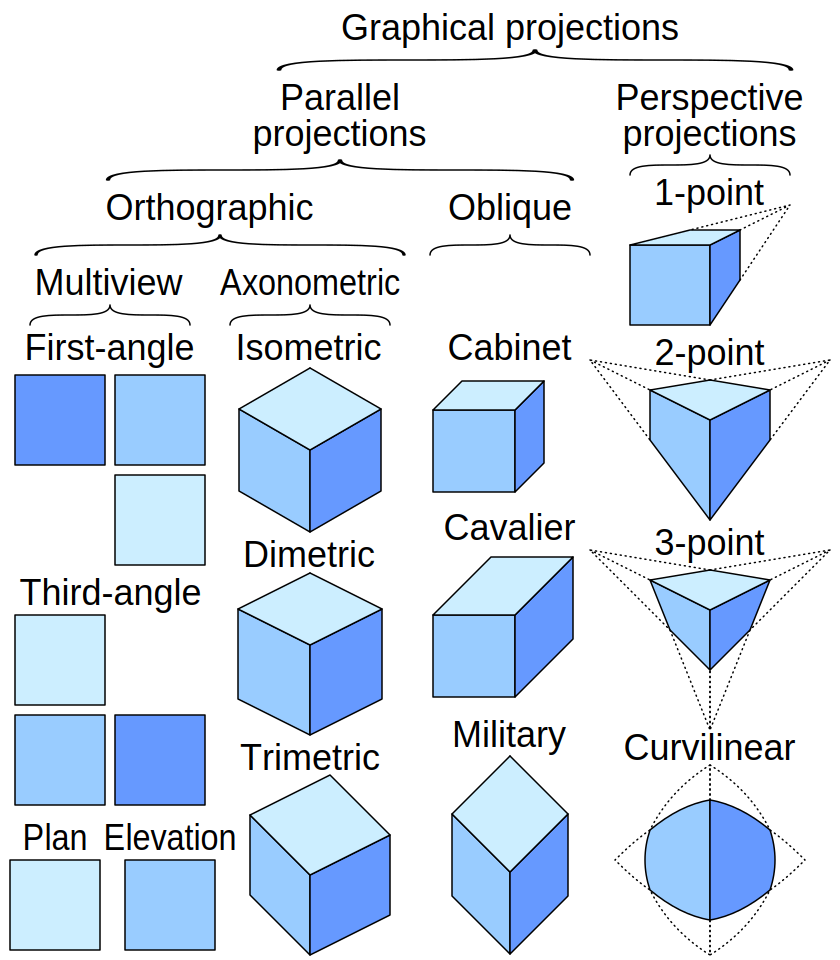
- 平行投影(Parallel)，投影中心在无穷远处，投影线互相平行
- 正交投影(Orthographic)
- 多视图投影(Multiview)
- 轴测投影(Axonometric)
- 斜投影(Oblique)
- 透视投影，投影中心在有限距离处，投影线会聚于一点
投影方式选择
- 经典成像中，两种投影方式的实现是不同的
- 从数学上来看，平行投影是透视投影的极限情况，即投影线的会聚点位于无穷远处
- 计算机图形学中，所有的成像计算采用同一套管线实现
平行投影(Parallel Projection)
特点：保留物体的实际尺寸和平行关系，常用于工程和设计
二次分类的依据：投影线与投影平面的夹角
-
正交投影 (Orthographic)
投影线与投影平面垂直 (90°) -
斜投影 (Oblique)
投影线与投影平面不垂直，呈一定角度
正交投影(Orthographic Proj.)
投影线与投影平面垂直
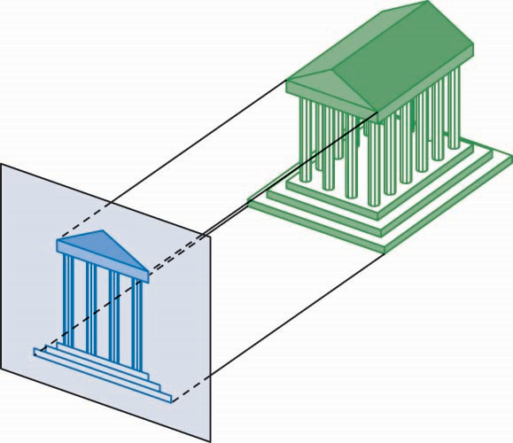
正交投影(1)：多视图投影(Multiview)
主要投影平面与物体面的坐标轴平行，一般采用第一人称视图，常用于展示物体的三视图，即正视图，左视图和顶视图
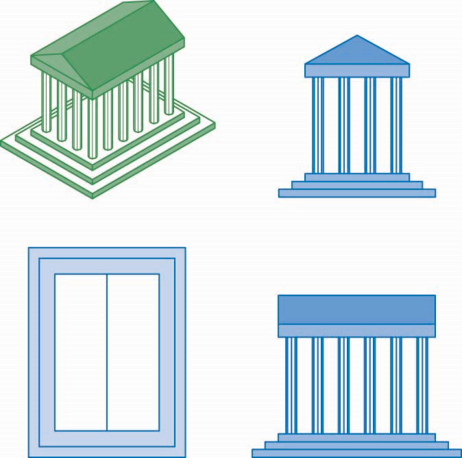
- 一般用于机械制图、建筑设计等，能够精确表达尺寸和形状。
- 用三个视图加上等轴测视图构成完整的视图
正交投影(1)：多视图投影(Multiview)
多视图正投影优点和缺点：
- 优点：
- 能够保持物体原有的距离和角度
- 维持原有的形状
- 可用于测量，如规划设计、制作手册等
- 缺点：
- 因为视角位置上存在遮挡，无法观察到物体的完整情况
- 通常需要加上轴测图
正交投影(2)：轴测投影(Axonometric Proj.)
投影平面相对物体发生运动，与物体的主要坐标轴不平行，呈一定角度，可用于在一张图上展示物体的三维形态
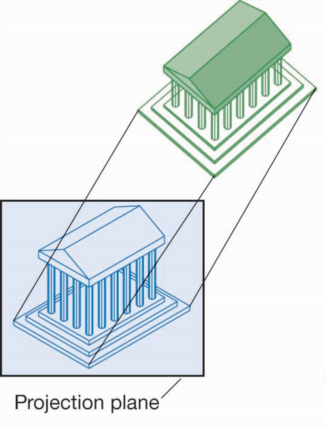
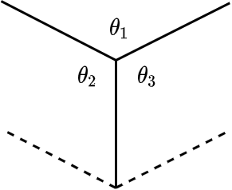
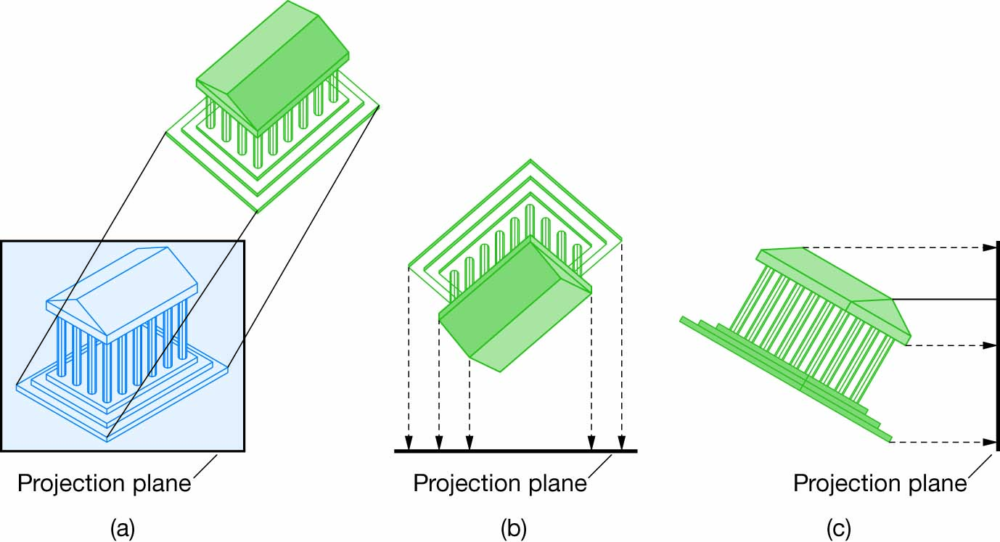
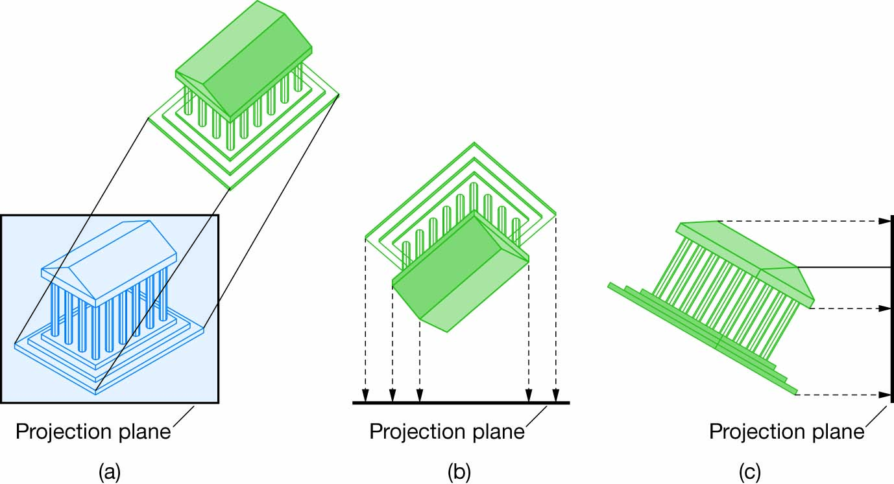
应用：CAD、技术插图、UI设计、复古风格游戏。
正交投影(2)：轴测投影(Axonometric Proj.)
轴测投影的类型：根据投影立方体一角的三个角度有几个相同，将轴测投影分为等轴测(isometric, 三个角相同)，二轴测(dimetric, 二个角相同)，三轴测(trimetric 三个角都不同)。其中，等轴测视图最为常用
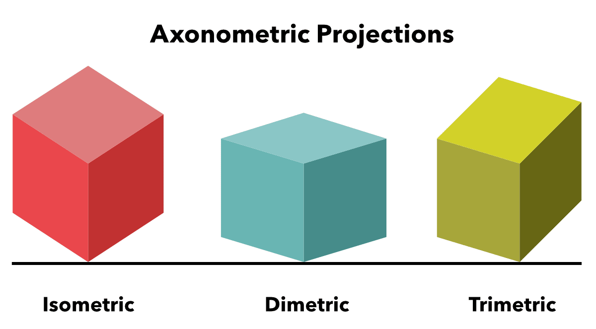
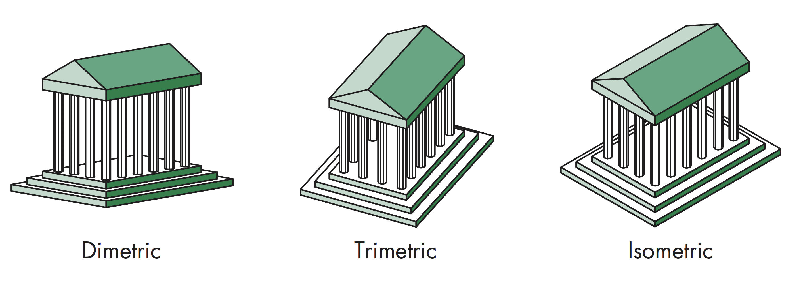
正交投影(2)：轴测投影(Axonometric Proj.)
轴测投影优点和缺点
- 线段会有缩放，可通过旋转角度找到缩放系数
- 能保持线性关系，但无法维持角度关系。如将一个圆投影到不平行的投影平面，形成的结果为椭圆
- 对一个类似盒子的三维物体，可同时看到三个主要表面
- 可能产生光学错觉，如平行线看起来像是发散的线
- 视觉上不具有真实感，远处的物体与近处的物体有同样的缩放系数
斜投影(Oblique Proj.)
投影线与投影平面之间可以成任意角度，保持一个面与投影平面平行（用于保留真实形状），又能够表现出深度。

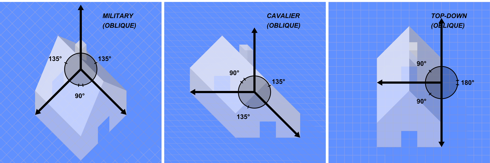
应用：家具设计草图、快速表现物体形态、地图绘制。
斜投影(Oblique Proj.)
斜投影的优缺点
- 可选择任意角度，强调物体中某个特定的面，尤其用于建筑设计中
- 与投影平面平行的平面中角度能够维持，同时在斜投影中可以看到周围的面
- 在现实世界中，无法用简单的相机获得斜投影视图，一般需要借助特殊的镜头
透视投影(Perspective Proj.)
透视投影中，投影线会聚到投影中心，产生近大远小的视觉效果，符合人眼视觉的特征，能够产生真实感和深度感
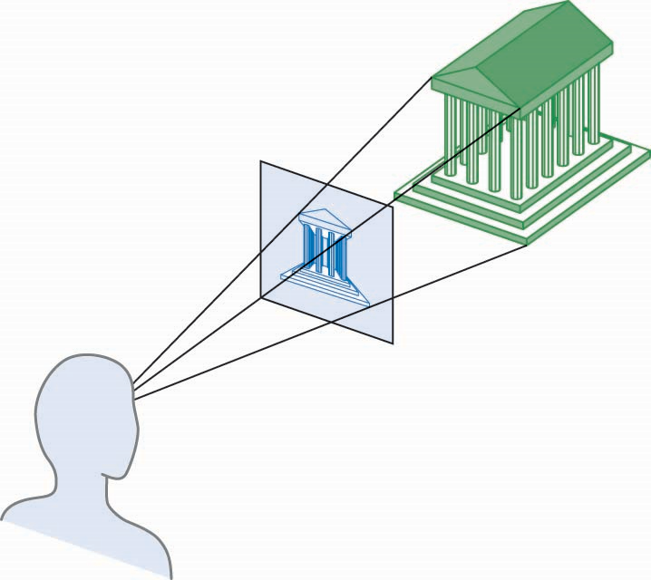
应用：绘画、摄影、3D游戏、电影、虚拟现实等一切追求真实感的领域。
透视投影(Perspective Proj.)
透视投影中，物体上的平行线(与投影平面不平行的线)会聚到投影方向上的一点，该点称为灭点(Vanishing Point)
利用灭点可以手绘简单的透视投影效果图
- 三点透视中，没有一个主方向与投影面平行
- 立方体投影有三个灭点
- 两点透视中，一个主方向与投影面平行
- 立方体投影有两个灭点
- 一点透视中，两个主方向与投影面平行
- 立方体投影有一个灭点
透视投影的优缺点
- 距离观察者较远的物体会比距离较近的物体在投影平面上的成像更小，看起来会更真实
- 沿着同一方向两段相同距离的线段在投影成像上距离不同
- 只有与投影平面平行的面上的角度能够得到维持
- 透视投影较难用手绘实现，但在计算机中可以
课堂测试
- 我们玩第一人称射击游戏时，屏幕上显示的画面是用了哪种投影方式？为什么？
答案：透视投影，为了营造真实的沉浸感和空间感，“近大远小”有助于判断距离。 - 请用一句话概括平行投影和透视投影最根本的区别。
答案：投影线是相互平行（平行投影）还是汇聚于一点（透视投影）。
后测 (Post-assessment)
请识别以下图像分别使用了哪种主要的投影方式？
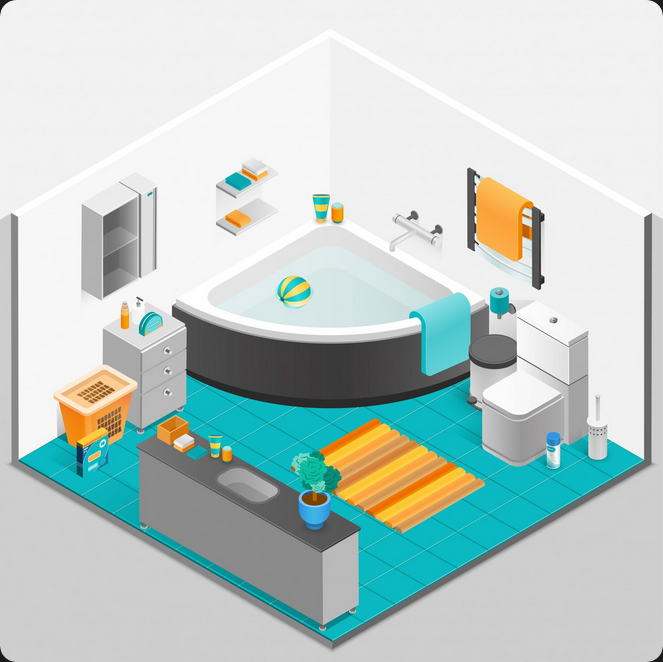
等轴测投影
![[帕齐礼拜堂外部照片的图像]](../../images/cg/chap04/ch04-test-2.jpg)
透视投影
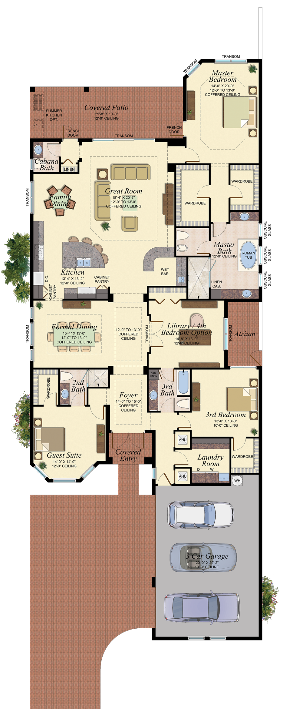
正交投影 (多视图)
总结
- 经典观察的三要素：投影中心、投影线、投影平面
- 投影的两大分类：平行投影和透视投影，其根本区别在于投影线是否平行
- 平行投影中，包括正交投影（三视图、等轴测）和斜投影，分别服务于精确测量和快速表现
- 透视投影是创造视觉真实感的关键